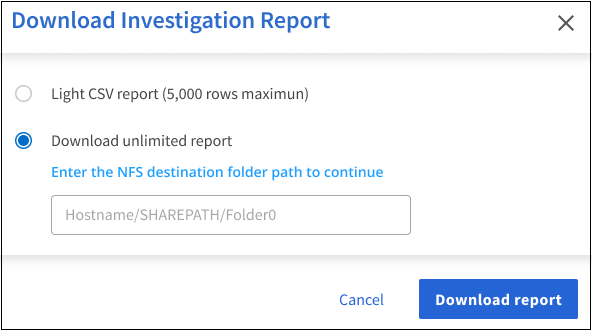

Dokumentationsänderungen beantragen
Dokumentationsänderungen beantragen In GitHub bearbeiten
In GitHub bearbeiten Leitfaden für Beitragende
Leitfaden für BeitragendeAnzeigen von Compliance-Berichten
Beitragende
Cloud Data Sense bietet Berichte, anhand deren Sie den Status des Datenschutzprogramms Ihres Unternehmens besser verstehen können.
Standardmäßig zeigen die Cloud Data Sense Dashboards Compliance- und Governance-Daten für alle Arbeitsumgebungen, Datenbanken und Datenquellen an. Wenn Sie Berichte anzeigen möchten, die Daten nur für einige Arbeitsumgebungen enthalten, Wählen Sie diese Arbeitsumgebungen aus.

|
|
Datenschutzrisiko-Assessment-Bericht
Der Datenschutzrisiko-Assessment-Bericht bietet einen Überblick über den Datenschutzrisikostatus Ihres Unternehmens, wie dies durch Datenschutzvorschriften wie DSGVO und CCPA erforderlich ist. Der Bericht enthält die folgenden Informationen:
- Compliance-Status
-
A Schweregrad Und die Verteilung von Daten, ganz gleich, ob es sich um unempfindliche, personenbezogene oder sensible Daten handelt.
- Assessment-Übersicht
-
Eine Aufschlüsselung der gefundenen Arten von personenbezogenen Daten sowie der Kategorien von Daten.
- Betroffene in dieser Beurteilung
-
Die Anzahl der Personen, nach Ort, für die nationale Kennungen gefunden wurden.
Generieren des Datenschutzrisikobewertungsberichts
Rufen Sie die Registerkarte „Data Sense“ auf, um den Bericht zu erstellen.
-
Klicken Sie im BlueXP-Menü auf Governance > Klassifizierung.
-
Klicken Sie auf Compliance und dann auf das Download-Symbol neben Privacy Risk Assessment unter Reports.

Cloud Data Sense erstellt einen PDF-Bericht, den Sie nach Bedarf prüfen und an andere Gruppen senden können.
Schweregrad
Cloud Data Sense berechnet den Schweregrad für den Privacy Risk Assessment-Bericht auf der Grundlage von drei Variablen:
-
Der Prozentsatz der personenbezogenen Daten aus allen Daten.
-
Der Prozentsatz sensibler personenbezogener Daten aus allen Daten.
-
Der Prozentsatz der Dateien, die betroffene Daten enthalten, die durch nationale Kennungen wie nationale IDs, Sozialversicherungsnummern und Steuerkennzahlen bestimmt werden.
Die folgende Logik dient zur Ermittlung der Punktzahl:
| Schweregrad | Logik |
|---|---|
0 |
Alle drei Variablen sind genau 0% |
1 |
Eine der Variablen ist größer als 0 % |
2 |
Eine der Variablen ist größer als 3% |
3 |
Zwei der Variablen sind größer als 3% |
4 |
Drei der Variablen sind größer als 3 % |
5 |
Eine der Variablen ist größer als 6% |
6 |
Zwei der Variablen sind größer als 6% |
7 |
Drei der Variablen sind größer als 6 % |
8 |
Eine der Variablen ist größer als 15% |
9 |
Zwei der Variablen sind größer als 15% |
10 |
Drei der Variablen sind größer als 15 % |
PCI DSS-Bericht
Der PCI DSS-Bericht (Payment Card Industry Data Security Standard) hilft Ihnen bei der Identifizierung der Verteilung von Kreditkarteninformationen über Ihre Dateien hinweg. Der Bericht enthält die folgenden Informationen:
- Überblick
-
Wie viele Dateien enthalten Kreditkarteninformationen und in welchen Arbeitsumgebungen.
- Verschlüsselung
-
Der Prozentsatz der Dateien, die Kreditkartendaten in verschlüsselten oder nicht verschlüsselten Arbeitsumgebungen enthalten. Diese Informationen sind spezifisch für Cloud Volumes ONTAP.
- Schutz Vor Ransomware
-
Der Prozentsatz von Dateien mit Kreditkarteninformationen, die in Arbeitsumgebungen gespeichert sind, für die der Ransomware-Schutz aktiviert ist oder nicht. Diese Informationen sind spezifisch für Cloud Volumes ONTAP.
- Aufbewahrung
-
Der Zeitrahmen, in dem die Dateien zuletzt geändert wurden. Dies ist hilfreich, weil Sie Ihre Kreditkartendaten nicht länger aufbewahren sollten, als Sie sie bearbeiten müssen.
- Verteilung der Kreditkarteninformationen
-
Die Arbeitsumgebungen, in denen Kreditkartendaten gefunden wurden und ob Verschlüsselung und Ransomware-Schutz aktiviert sind.
PCI DSS-Bericht wird erstellt
Rufen Sie die Registerkarte „Data Sense“ auf, um den Bericht zu erstellen.
-
Klicken Sie im BlueXP-Menü auf Governance > Klassifizierung.
-
Klicken Sie auf Compliance und dann auf das Download-Symbol neben PCI DSS Report unter Reports.

Cloud Data Sense erstellt einen PDF-Bericht, den Sie nach Bedarf prüfen und an andere Gruppen senden können.
HIPAA-Bericht
Der HIPAA-Bericht (Health Insurance Portability and Accountability Act) hilft Ihnen bei der Identifizierung von Dateien, die Gesundheitsdaten enthalten. Es wurde entwickelt, um die Anforderung Ihres Unternehmens zu unterstützen, die HIPAA-Datenschutzgesetze einzuhalten. Die Information Cloud Data Sense Looks umfasst:
-
Zustandsreferenzmuster
-
ICD-10 CM medizinischer Code
-
ICD-9 CM medizinischer Code
-
HR – Kategorie Gesundheit
-
Datenkategorie für Gesundheitsanwendungen
Der Bericht enthält die folgenden Informationen:
- Überblick
-
Wie viele Dateien enthalten Gesundheitsinformationen und in welchen Arbeitsumgebungen.
- Verschlüsselung
-
Der Prozentsatz der Dateien, die Gesundheitsinformationen in verschlüsselten oder nicht verschlüsselten Arbeitsumgebungen enthalten. Diese Informationen sind spezifisch für Cloud Volumes ONTAP.
- Schutz Vor Ransomware
-
Der Prozentsatz von Dateien mit Gesundheitsinformationen in Arbeitsumgebungen, in denen Ransomware-Schutz aktiviert ist oder nicht. Diese Informationen sind spezifisch für Cloud Volumes ONTAP.
- Aufbewahrung
-
Der Zeitrahmen, in dem die Dateien zuletzt geändert wurden. Dies ist hilfreich, weil Sie Gesundheitsinformationen nicht länger aufbewahren sollten, als Sie sie verarbeiten müssen.
- Verteilung von Gesundheitsinformationen
-
In den Arbeitsumgebungen, in denen die Gesundheitsdaten gefunden wurden und ob Verschlüsselung und Ransomware-Schutz aktiviert sind.
HIPAA-Bericht wird erstellt
Rufen Sie die Registerkarte „Data Sense“ auf, um den Bericht zu erstellen.
-
Klicken Sie im BlueXP-Menü auf Governance > Klassifizierung.
-
Klicken Sie auf Compliance und dann auf das Download-Symbol neben HIPAA Report unter Reports.

Cloud Data Sense erstellt einen PDF-Bericht, den Sie nach Bedarf prüfen und an andere Gruppen senden können.
Datenzuordnungsbericht
Der Daten-Mapping-Bericht bietet einen Überblick über die Daten, die in Ihren Datenquellen gespeichert werden, um Sie bei Entscheidungen zu Migrations-, Backup-, Sicherheits- und Compliance-Prozessen zu unterstützen. Der Bericht enthält zunächst einen Übersichtsbericht, der alle Arbeitsumgebungen und Datenquellen zusammenfasst und dann eine Aufschlüsselung der einzelnen Arbeitsumgebungen enthält.
Der Bericht enthält die folgenden Informationen:
- Nutzung Von Kapazitäten
-
Für alle Arbeitsumgebungen: Listet die Anzahl der Dateien und die genutzte Kapazität für jede Arbeitsumgebung. Für einzelne Arbeitsumgebungen: Listet die Dateien auf, die die größte Kapazität nutzen.
- Alter der Daten
-
Bietet drei Diagramme und Diagramme für den Zeitpunkt, an dem Dateien erstellt, zuletzt geändert oder zuletzt aufgerufen wurden. Listet die Anzahl der Dateien und deren verwendete Kapazität auf der Grundlage bestimmter Datumsbereiche auf.
- Größe von Daten
-
Führt die Anzahl der Dateien auf, die in bestimmten Größenbereichen in Ihren Arbeitsumgebungen vorhanden sind.
- Dateitypen
-
Listet die Gesamtzahl der Dateien und die genutzte Kapazität für jeden Dateityp auf, der in Ihren Arbeitsumgebungen gespeichert ist.
Datenzuordnungsbericht wird erstellt
Rufen Sie die Registerkarte „Data Sense“ auf, um den Bericht zu erstellen.
-
Klicken Sie im BlueXP-Menü auf Governance > Klassifizierung.
-
Klicken Sie auf Governance, und klicken Sie dann im Governance Dashboard auf die Schaltfläche Bericht zur Übersicht über die vollständige Datenzuordnung.

Cloud Data Sense erstellt einen PDF-Bericht, den Sie nach Bedarf prüfen und an andere Gruppen senden können.
Bericht Zur Datenuntersuchung
Der Datenuntersuchungs-Bericht ist ein Download der Inhalte der Seite Datenuntersuchung. "Erfahren Sie mehr über die Seite zur Untersuchung von Daten".
Sie können den Bericht als CSV-Datei (die bis zu 5,000 Datenzeilen enthalten kann) auf dem lokalen Rechner speichern oder als JSON-Datei, die Sie in eine NFS-Freigabe exportieren (die eine unbegrenzte Anzahl von Zeilen enthalten kann). Wenn Data Sense Dateien (unstrukturierte Daten), Verzeichnisse (Ordner und Dateifreigaben) oder Datenbanken (strukturierte Daten) scannt, können bis zu drei Berichtsdateien heruntergeladen werden.
Beim Exportieren in eine Dateifreigabe stellen Sie sicher, dass Data Sense über die entsprechenden Berechtigungen für den Exportzugriff verfügt.
Generieren des Datenuntersuchungsberichts
-
Klicken Sie auf der Seite „Untersuchung von Daten“ auf
 Oben rechts auf der Seite klicken.
Oben rechts auf der Seite klicken. -
Wählen Sie aus, ob Sie einen .CSV-Bericht oder einen JSON-Bericht der Daten herunterladen möchten, und klicken Sie auf Bericht herunterladen.

Geben Sie bei Auswahl eines JSON-Berichts den Namen der NFS-Freigabe ein, auf die der Bericht im Format heruntergeladen werden soll
<host_name>:/<share_path>.
Ein Dialogfeld zeigt eine Meldung an, dass die Berichte heruntergeladen werden.
Sie können den Fortschritt der JSON-Berichterstellung in anzeigen "Statusbereich Aktionen".
Was ist in jedem Datenuntersuchungs-Bericht enthalten
Der Datenbericht unstrukturierte Dateien enthält folgende Informationen zu Ihren Dateien:
-
Dateiname
-
Positionstyp
-
Name der Arbeitsumgebung
-
Storage-Repository (z. B. Volume, Bucket, Shares)
-
Art der Arbeitsumgebung
-
Dateipfad
-
Dateityp
-
Dateigröße
-
Erstellungszeit
-
Zuletzt geändert
-
Zuletzt aufgerufen
-
Dateibesitzer
-
Kategorie
-
Persönliche Angaben
-
Sensible persönliche Daten
-
Löscherkennung Datum
Ein Löscherkennungsdatum gibt das Datum an, an dem die Datei gelöscht oder verschoben wurde. So können Sie feststellen, wann sensible Dateien verschoben wurden. Gelöschte Dateien sind nicht Teil der Anzahl der Dateinummern, die im Dashboard oder auf der Untersuchungsseite angezeigt wird. Die Dateien werden nur in den CSV-Berichten angezeigt.
Der Datenbericht für unstrukturierte Verzeichnisse* enthält die folgenden Informationen zu Ihren Ordnern und Dateifreigaben:
-
Name der Arbeitsumgebung
-
Storage-Repository (beispielsweise ein Ordner oder Dateifreigaben)
-
Art der Arbeitsumgebung
-
Dateipfad (Verzeichnisname)
-
Dateibesitzer
-
Erstellungszeit
-
Entdeckte Zeit
-
Zuletzt geändert
-
Zuletzt aufgerufen
-
Berechtigungen öffnen
-
Verzeichnistyp
Der Structured Data Report enthält die folgenden Informationen zu Ihren Datenbanktabellen:
-
DB-Tabellenname
-
Positionstyp
-
Name der Arbeitsumgebung
-
Storage-Repository (z. B. ein Schema)
-
Anzahl der Spalten
-
Zeilenanzahl
-
Persönliche Angaben
-
Sensible persönliche Daten
Auswählen der Arbeitsumgebungen für Berichte
Sie können die Inhalte des Cloud Data Sense Compliance Dashboards filtern, um Compliance-Daten für alle Arbeitsumgebungen und Datenbanken oder nur bestimmte Arbeitsumgebungen anzuzeigen.
Wenn Sie das Dashboard filtern, können Sie mit Data Sense die Compliance-Daten und -Berichte genau auf die von Ihnen ausgewählten Arbeitsumgebungen anwenden.
-
Klicken Sie auf das Dropdown-Menü Filter, wählen Sie die Arbeitsumgebungen aus, für die Sie Daten anzeigen möchten, und klicken Sie auf Ansicht.